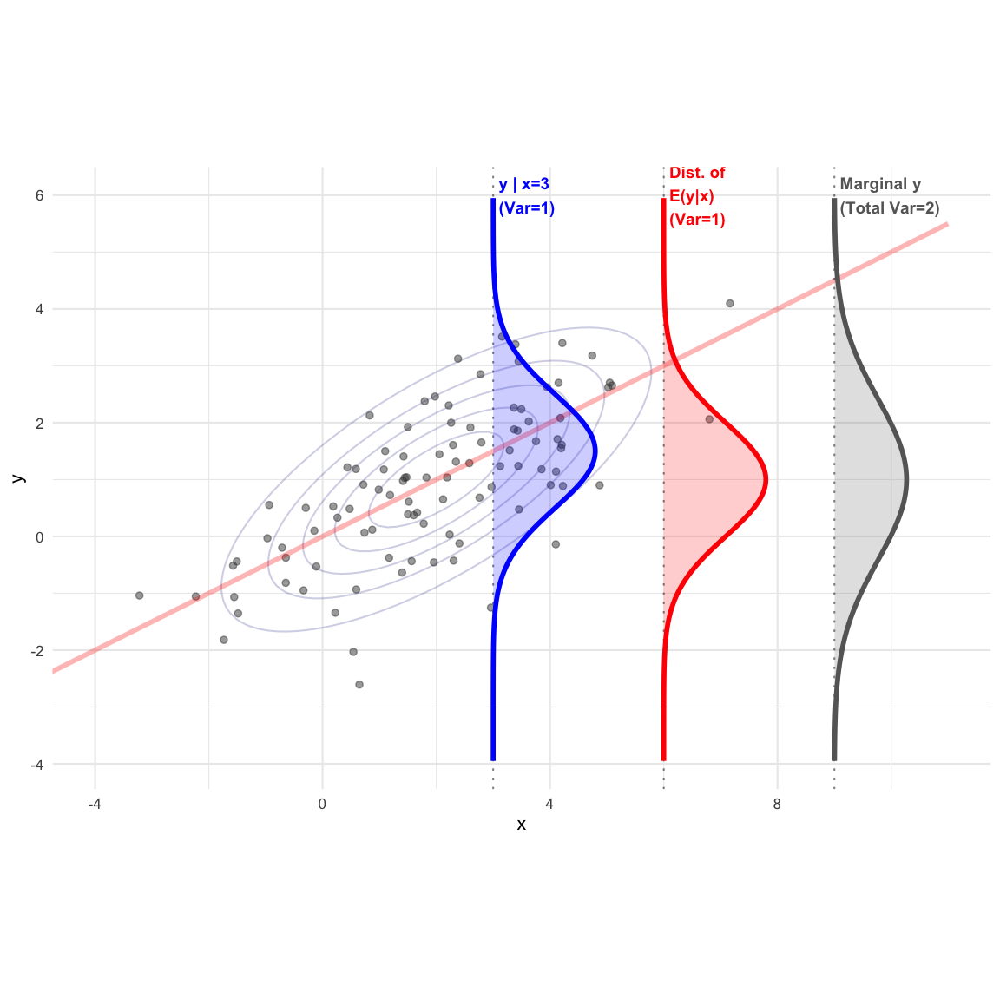
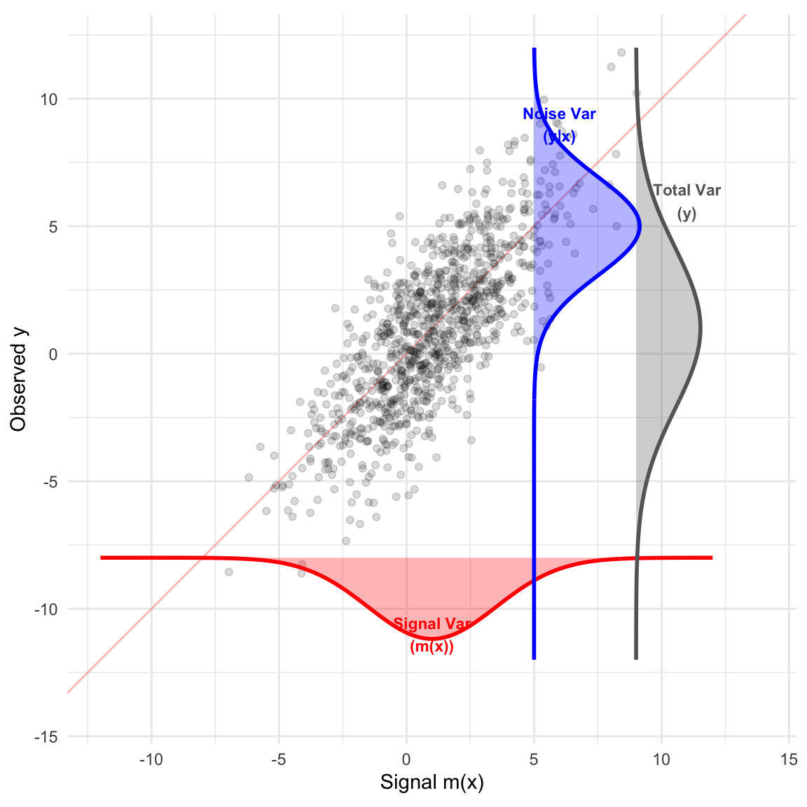

4 Multivariate Normal Distribution
4.1 Motivation
Consider the linear model: \[ y = X\beta + \epsilon, \quad \epsilon_i \sim N(0, \sigma^2) \]
We are often interested in the distributional properties of the response vector \(y\) and the residuals. Specifically, if \(y = (y_1, \dots, y_n)'\), we need to understand its multivariate distribution. \[ \hat{y} = Py, \quad e = y - \hat{y} = (I_n - P)y \]
4.2 Random Vectors and Matrices
Definition 4.1 (Random Vector and Matrix) A Random Vector is a vector whose elements are random variables. E.g., \[ x_{k \times 1} = (x_1, x_2, \dots, x_k)^T \] where \(x_1, \dots, x_k\) are each random variables.
A Random Matrix is a matrix whose elements are random variables. E.g., \(X_{n \times k} = (x_{ij})\), where \(x_{11}, \dots, x_{nk}\) are each random variables.
Definition 4.2 (Expected Value) The expected value (population mean) of a random matrix (or vector) is the matrix (or vector) of expected values of its elements.
For \(X_{n \times k}\): \[ E(X) = \begin{pmatrix} E(x_{11}) & \dots & E(x_{1k}) \\ \vdots & \ddots & \vdots \\ E(x_{n1}) & \dots & E(x_{nk}) \end{pmatrix} \]
\[ E\left(\begin{pmatrix} x_1 \\ \vdots \\ x_k \end{pmatrix}\right) = \begin{pmatrix} E(x_1) \\ \vdots \\ E(x_k) \end{pmatrix} \]
Definition 4.3 (Variance-Covariance Matrix) For a random vector \(x_{k \times 1} = (x_1, \dots, x_k)^T\), the matrix is:
\[ \text{Var}(x) = \Sigma_x = \begin{pmatrix} \sigma_{11} & \sigma_{12} & \dots & \sigma_{1k} \\ \sigma_{21} & \sigma_{22} & \dots & \sigma_{2k} \\ \vdots & \vdots & \ddots & \vdots \\ \sigma_{k1} & \sigma_{k2} & \dots & \sigma_{kk} \end{pmatrix} \]
Where:
- \(\sigma_{ij} = \text{Cov}(x_i, x_j) = E[(x_i - \mu_i)(x_j - \mu_j)]\)
- \(\sigma_{ii} = \text{Var}(x_i) = E[(x_i - \mu_i)^2]\)
In matrix notation: \[ \text{Var}(x) = E[(x - \mu_x)(x - \mu_x)^T] \] Note: \(\text{Var}(x)\) is symmetric.
4.2.1 Derivation of Covariance Matrix Structure
Expanding the vector multiplication for variance: \[ (x - \mu_x)(x - \mu_x)' \quad \text{where } \mu_x = (\mu_1, \dots, \mu_n)' \] \[ = \begin{pmatrix} x_1 - \mu_1 \\ \vdots \\ x_n - \mu_n \end{pmatrix} (x_1 - \mu_1, \dots, x_n - \mu_n) \] This results in the matrix \(A = (a_{ij})\) where \(a_{ij} = (x_i - \mu_i)(x_j - \mu_j)\). Taking expectations yields the covariance matrix elements \(\sigma_{ij}\).
Definition 4.4 (Covariance Matrix (Two Vectors)) For random vectors \(x_{k \times 1}\) and \(y_{n \times 1}\), the covariance matrix is: \[ \text{Cov}(x, y) = E[(x - \mu_x)(y - \mu_y)^T] = \begin{pmatrix} \text{Cov}(x_1, y_1) & \dots & \text{Cov}(x_1, y_n) \\ \vdots & \ddots & \vdots \\ \text{Cov}(x_k, y_1) & \dots & \text{Cov}(x_k, y_n) \end{pmatrix} \] Note that \(\text{Cov}(x, x) = \text{Var}(x)\).
Definition 4.5 (Correlation Matrix) The correlation matrix of a random vector \(x\) is: \[ \text{corr}(x) = \begin{pmatrix} 1 & \rho_{12} & \dots & \rho_{1k} \\ \vdots & \ddots & \vdots \\ \rho_{k1} & \rho_{k2} & \dots & 1 \end{pmatrix} \] where \(\rho_{ij} = \text{corr}(x_i, x_j)\).
Relationships: Let \(V_x = \text{diag}(\text{Var}(x_1), \dots, \text{Var}(x_k))\). \[ \Sigma_x = V_x^{1/2} \rho_x V_x^{1/2} \quad \text{and} \quad \rho_x = (V_x^{1/2})^{-1} \Sigma_x (V_x^{1/2})^{-1} \] Similarly for two vectors: \[ \Sigma_{xy} = V_x^{1/2} \rho_{xy} V_y^{1/2} \]
4.3 Properties of Mean and Variance
We can derive several key algebraic properties for operations on random vectors.
- \(E(X + Y) = E(X) + E(Y)\)
- \(E(AXB) = A E(X) B\) (In particular, \(E(AX) = A\mu_x\))
- \(\text{Cov}(x, y) = \text{Cov}(y, x)^T\)
- \(\text{Cov}(x + c, y + d) = \text{Cov}(x, y)\)
- \(\text{Cov}(Ax, By) = A \text{Cov}(x, y) B^T\)
- Special case for scalars: \(\text{Cov}(ax, by) = ab \cdot \text{Cov}(x, y)\)
- \(\text{Cov}(x_1 + x_2, y_1) = \text{Cov}(x_1, y_1) + \text{Cov}(x_2, y_1)\)
- \(\text{Var}(x + c) = \text{Var}(x)\)
- \(\text{Var}(Ax) = A \text{Var}(x) A^T\)
- \(\text{Var}(x_1 + x_2) = \text{Var}(x_1) + \text{Cov}(x_1, x_2) + \text{Cov}(x_2, x_1) + \text{Var}(x_2)\)
- \(\text{Var}(\sum x_i) = \sum \text{Var}(x_i)\) if independent.
Proof. Property 5 (Covariance of Linear Transformation): \[ \begin{aligned} \text{Cov}(Ax, By) &= E[(Ax - A\mu_x)(By - B\mu_y)^T] \\ &= A E[(x - \mu_x)(y - \mu_y)^T] B^T \\ &= A \text{Cov}(x, y) B^T \end{aligned} \] Property 2 (Expectation of Linear Transformation):
To prove \(E(AXB) = A E(X) B\): First consider \(E(Ax_j)\) where \(x_j\) is a column of \(X\). \[ E(Ax_j) = E\begin{pmatrix} a_1' x_j \\ \vdots \\ a_n' x_j \end{pmatrix} = \begin{pmatrix} E(a_1' x_j) \\ \vdots \\ E(a_n' x_j) \end{pmatrix} \] Since \(a_i\) are constants: \[ E(a_i' x_j) = E\left(\sum_{k=1}^p a_{ik} x_{kj}\right) = \sum_{k=1}^p a_{ik} E(x_{kj}) = a_i' E(x_j) \] Thus \(E(Ax_j) = A E(x_j)\). Applying this to all columns of \(X\): \[ E(AX) = [E(Ax_1), \dots, E(Ax_m)] = [AE(x_1), \dots, AE(x_m)] = A E(X) \] Similarly, \(E(XB) = E(X)B\).
Proof of Property 9 (Variance of Sum):
\[ \text{Var}(x_1 + x_2) = E[(x_1 + x_2 - \mu_1 - \mu_2)(x_1 + x_2 - \mu_1 - \mu_2)^T] \] Let centered variables be denoted by differences. \[ = E[((x_1 - \mu_1) + (x_2 - \mu_2))((x_1 - \mu_1) + (x_2 - \mu_2))^T] \] Expanding terms: \[ = E[(x_1 - \mu_1)(x_1 - \mu_1)^T + (x_1 - \mu_1)(x_2 - \mu_2)^T + (x_2 - \mu_2)(x_1 - \mu_1)^T + (x_2 - \mu_2)(x_2 - \mu_2)^T] \] \[ = \text{Var}(x_1) + \text{Cov}(x_1, x_2) + \text{Cov}(x_2, x_1) + \text{Var}(x_2) \]
4.4 The Multivariate Normal Distribution
4.4.1 Definition and Density
Definition 4.6 (Independent Standard Normal) Let \(z = (z_1, \dots, z_n)'\) where \(z_i \sim N(0, 1)\) are independent. We say \(z \sim N_n(0, I_n)\). The joint PDF is the product of marginals: \[ f(z) = \prod_{i=1}^n \frac{1}{\sqrt{2\pi}} e^{-\frac{z_i^2}{2}} = \frac{1}{(2\pi)^{n/2}} e^{-\frac{1}{2} z^T z} \] Properties: \(E(z) = 0\) and \(\text{Var}(z) = I_n\) (Covariance is 0 for \(i \ne j\), Variance is 1).
Definition 4.7 (Multivariate Normal Distribution) A random vector \(x\) (\(n \times 1\)) has a multivariate normal distribution if it has the same distribution as: \[ x = A_{n \times p} z_{p \times 1} + \mu_{n \times 1} \] where \(z \sim N_p(0, I_p)\), \(A\) is a matrix of constants, and \(\mu\) is a vector of constants. The moments are:
- \(E(x) = \mu\)
- \(\text{Var}(x) = AA^T = \Sigma\)
4.4.2 Geometric Interpretation
Using Spectral Decomposition, \(\Sigma = Q \Lambda Q'\). We can view the transformation \(x = Az + \mu\) as:
- Scaling by eigenvalues (\(\Lambda^{1/2}\)).
- Rotation by eigenvectors (\(Q\)).
- Shift by mean (\(\mu\)).
An Shinely App for Visualizing Bivariate Normal
Use the controls to construct the covariance matrix \(\boldsymbol{\Sigma}\) geometrically.
We define the transformation matrix \(\mathbf{A} = \mathbf{Q}\mathbf{\Lambda}^{1/2}\), where \(\mathbf{Q}\) is a rotation matrix and \(\mathbf{\Lambda}^{1/2}\) is a diagonal scaling matrix. The resulting covariance is \(\boldsymbol{\Sigma} = \mathbf{A}\mathbf{A}'\).
#| '!! shinylive warning !!': |
#| shinylive does not work in self-contained HTML documents.
#| Please set `embed-resources: false` in your metadata.
#| standalone: true
#| viewerHeight: 700
#| echo: false
library(shiny)
library(bslib)
library(shinyWidgets)
library(munsell)
library(scales)
library(tibble)
library(rlang)
library(ggplot2)
library(mvtnorm)
# --- 1. PRE-GENERATE FIXED Z POINTS ---
set.seed(123)
z_fixed <- matrix(rnorm(50 * 2), ncol = 2)
ui <- page_fillable(
theme = bs_theme(version = 5),
withMathJax(),
# --- ROW 1: CONTROLS (Compact Strip) ---
card(
class = "p-2",
layout_columns(
col_widths = c(3, 2, 2, 2, 2),
div(class = "text-center", tags$label(HTML("$$\\theta$$")),
noUiSliderInput("theta", label = NULL, min = 0, max = 360, value = 0, step = 5,
orientation = "horizontal", width = "100%", height = "10px", color = "#0d6efd")),
div(class = "text-center", tags$label(HTML("$$\\sqrt{\\lambda_1}$$")),
noUiSliderInput("L1", label = NULL, min = 0.5, max = 3, value = 2, step = 0.1,
orientation = "horizontal", width = "100%", height = "10px", color = "#ffc107")),
div(class = "text-center", tags$label(HTML("$$\\sqrt{\\lambda_2}$$")),
noUiSliderInput("L2", label = NULL, min = 0.5, max = 3, value = 1, step = 0.1,
orientation = "horizontal", width = "100%", height = "10px", color = "#adb5bd")),
div(class = "text-center", tags$label(HTML("$$\\mu_1$$")),
noUiSliderInput("mu1", label = NULL, min = -3, max = 3, value = 0, step = 0.5,
orientation = "horizontal", width = "100%", height = "10px", color = "#6c757d")),
div(class = "text-center", tags$label(HTML("$$\\mu_2$$")),
noUiSliderInput("mu2", label = NULL, min = -3, max = 3, value = 0, step = 0.5,
orientation = "horizontal", width = "100%", height = "10px", color = "#6c757d"))
)
),
# --- ROW 2: SIDE-BY-SIDE (Plot & Math) ---
layout_columns(
col_widths = c(8, 4), # 2/3 for Plot, 1/3 for Matrix
# Left: Visualization
card(
full_screen = TRUE,
plotOutput("contourPlot", height = "500px")
),
# Right: The Math (Larger Font)
card(
class = "p-3 d-flex justify-content-center", # Center content vertically
h5("Algebraic Representation", class = "mb-3 text-center"),
# Use CSS to make the font larger and monospaced
div(
style = "font-family: 'Courier New', monospace; font-size: 1.1rem; line-height: 1.4;",
verbatimTextOutput("matrixSide", placeholder = TRUE)
)
)
)
)
server <- function(input, output) {
data <- reactive({
theta_rad <- input$theta * pi / 180
Q <- matrix(c(cos(theta_rad), sin(theta_rad), -sin(theta_rad), cos(theta_rad)), 2, 2)
Lam_sqrt <- diag(c(input$L1, input$L2))
A <- Q %*% Lam_sqrt
Sigma <- A %*% t(A)
mu_vec <- c(input$mu1, input$mu2)
x_points <- z_fixed %*% t(A)
x_points[,1] <- x_points[,1] + mu_vec[1]
x_points[,2] <- x_points[,2] + mu_vec[2]
list(Q=Q, L=c(input$L1, input$L2), mu=mu_vec, Sigma=Sigma, A=A, points=as.data.frame(x_points))
})
output$matrixSide <- renderText({
M <- data()
A <- round(M$A, 2)
S <- round(M$Sigma, 2)
rho <- cov2cor(M$Sigma)[1,2]
# Formatted to fill vertical space comfortably
paste0(
"Linear Transform:\n",
"x = A z + μ\n\n",
"Matrix A:\n",
sprintf("[%4.1f %4.1f]\n", A[1,1], A[1,2]),
sprintf("[%4.1f %4.1f]\n", A[2,1], A[2,2]),
"\n",
"Covariance Σ:\n",
"(Σ = AA')\n",
sprintf("[%4.1f %4.1f]\n", S[1,1], S[1,2]),
sprintf("[%4.1f %4.1f]\n", S[2,1], S[2,2]),
"\n",
"Correlation:\n",
sprintf("ρ = %.3f", rho)
)
})
output$contourPlot <- renderPlot({
req(data())
M <- data()
grid_r <- seq(-6, 6, length.out = 60)
df_grid <- expand.grid(x = grid_r, y = grid_r)
df_grid$z <- dmvnorm(as.matrix(df_grid), mean = M$mu, sigma = M$Sigma)
v1 <- M$Q[,1] * M$L[1]; v2 <- M$Q[,2] * M$L[2]
axes <- tibble(x = M$mu[1], y = M$mu[2],
xend1 = M$mu[1] + v1[1], yend1 = M$mu[2] + v1[2],
xend2 = M$mu[1] + v2[1], yend2 = M$mu[2] + v2[2])
ggplot() +
geom_contour_filled(data = df_grid, aes(x, y, z = z), bins = 9, show.legend = FALSE) +
geom_point(data = M$points, aes(V1, V2), color = "black", size = 2, alpha = 0.7) +
geom_segment(data = axes, aes(x=x, y=y, xend=xend1, yend=yend1),
color = "#ffc107", linewidth = 1.5, arrow = arrow(length = unit(0.3,"cm"))) +
geom_segment(data = axes, aes(x=x, y=y, xend=xend2, yend=yend2),
color = "white", linewidth = 1.5, arrow = arrow(length = unit(0.3,"cm"))) +
coord_fixed(xlim = c(-6, 6), ylim = c(-6, 6)) +
theme_minimal() +
labs(x = "X", y = "Y")
})
}
shinyApp(ui, server)4.4.3 Probability Density Function
If \(\Sigma\) is positive definite, the PDF exists. We use the change of variable formula for \(x = Az + \mu\): \[ f_x(x) = f_z(g^{-1}(x)) \cdot |J| \] where \(z = A^{-1}(x - \mu)\) and \(J = \det(A^{-1}) = |A|^{-1}\).
\[ f_x(x) = (2\pi)^{-p/2} |A|^{-1} \exp \left\{ -\frac{1}{2} (A^{-1}(x-\mu))^T (A^{-1}(x-\mu)) \right\} \]
Using \(|\Sigma| = |AA^T| = |A|^2\) and \(\Sigma^{-1} = (AA^T)^{-1}\), we get: \[ f_x(x) = (2\pi)^{-p/2} |\Sigma|^{-1/2} \exp \left\{ -\frac{1}{2} (x-\mu)^T \Sigma^{-1} (x-\mu) \right\} \]
4.4.4 Moment Generating Function
Definition 4.8 (Moment Generating Function (MGF)) The MGF of a random vector \(x\) is \(M_x(t) = E(e^{t^T x})\). For \(x = Az + \mu\): \[ M_x(t) = E[e^{t^T(Az + \mu)}] = e^{t^T\mu} E[e^{(A^T t)^T z}] = e^{t^T\mu} M_z(A^T t) \] Since \(M_z(u) = e^{u^T u / 2}\): \[ M_x(t) = e^{t^T\mu} \exp\left( \frac{1}{2} t^T (AA^T) t \right) = \exp \left( t^T\mu + \frac{1}{2} t^T \Sigma t \right) \]
Key Properties:
Uniqueness: Two random vectors with the same MGF have the same distribution.
Independence: \(y_1\) and \(y_2\) are independent iff \(M_y(t) = M_{y_1}(t_1) M_{y_2}(t_2)\).
4.5 Construction and Linear Transformations
Theorem 4.1 (Constructing MVN Random Vector) Let \(\mu \in \mathbb{R}^n\) and \(\Sigma\) be an \(n \times n\) symmetric non-negative definitive (n.n.d) matrix. Then there exists a multivariate normal distribution with mean \(\mu\) and covariance \(\Sigma\).
Proof. Since \(\Sigma\) is n.n.d., there exists \(B\) such that \(\Sigma = BB^T\) (e.g., via Cholesky or Spetral Decomposition). Let \(z \sim N_n(0, I)\) and define \(x = Bz + \mu\).
Theorem 4.2 (Linear Transformation Theorem) Let \(x \sim N_n(\mu, \Sigma)\). Let \(y = Cx + d\) where \(C\) is \(r \times n\) and \(d\) is \(r \times 1\). Then: \[ y \sim N_r(C\mu + d, C \Sigma C^T) \]
Proof. \(x = Az + \mu\) where \(AA^T = \Sigma\). \[ y = C(Az + \mu) + d = (CA)z + (C\mu + d) \] This fits the definition of MVN with mean \(C\mu + d\) and variance \(C \Sigma C^T\).
4.5.1 Important Corollaries of Theorem 4.2
Corollary 4.1 (Marginals) Any subvector of a multivariate normal vector is also multivariate normal.
Proof. If we partition \(x = (x_1', x_2')'\), we can use \(C = (I_r, 0)\) to show \(x_1 \sim N(\mu_1, \Sigma_{11})\).
Corollary 4.2 (Univariate Combinations) Any linear combination \(a^T x\) is univariate normal: \[ a^T x \sim N(a^T \mu, a^T \Sigma a) \]
Corollary 4.3 (Orthogonal Transformations) If \(x \sim N(0, I_n)\) and \(Q\) is orthogonal (\(Q'Q = I\)), then \(y = Q'x \sim N(0, I_n)\).
Corollary 4.4 (Standardization) If \(y \sim N_n(\mu, \Sigma)\) and \(\Sigma\) is positive definite: \[ \Sigma^{-1/2}(y - \mu) \sim N_n(0, I_n) \]
Proof. Let \(z = \Sigma^{-1/2}(y - \mu)\). Then \(\text{Var}(z) = \Sigma^{-1/2} \Sigma \Sigma^{-1/2} = I_n\).
4.6 Independence
Theorem 4.3 (Independence in MVN) Let \(y \sim N(\mu, \Sigma)\) be partitioned into \(y_1\) and \(y_2\). \[ \Sigma = \begin{pmatrix} \Sigma_{11} & \Sigma_{12} \\ \Sigma_{21} & \Sigma_{22} \end{pmatrix} \] Then \(y_1\) and \(y_2\) are independent if and only if \(\Sigma_{12} = 0\) (zero covariance).
Proof.
Independence \(\implies\) Covariance is 0: This holds generally for any distribution. \[ \text{Cov}(y_1, y_2) = E[(y_1 - \mu_1)(y_2 - \mu_2)'] = 0 \]
Covariance is 0 \(\implies\) Independence: This is specific to MVN. We use MGFs. If \(\Sigma_{12} = 0\), the quadratic form in the MGF splits: \[ t^T \Sigma t = t_1^T \Sigma_{11} t_1 + t_2^T \Sigma_{22} t_2 \] The MGF becomes: \[ M_y(t) = \exp(t_1^T \mu_1 + \frac{1}{2} t_1^T \Sigma_{11} t_1) \times \exp(t_2^T \mu_2 + \frac{1}{2} t_2^T \Sigma_{22} t_2) \] \[ M_y(t) = M_{y_1}(t_1) M_{y_2}(t_2) \] Thus, they are independent.
4.7 Signal-Noise Decomposition for Multivariate Normal Distribution
We can formalize the relationship between two random vectors \(y\) and \(x\) through a decomposition theorem that separates the systematic signal from the stochastic noise.
Theorem 4.4 (Regression Decomposition Theorem) Let the random vector \(V\) of dimension \(p \times 1\) be partitioned into two subvectors \(y\) (\(p_1 \times 1\)) and \(x\) (\(p_2 \times 1\)). Assume \(V\) follows a multivariate normal distribution:
\[ \begin{pmatrix} y \\ x \end{pmatrix} \sim N_p\left( \begin{pmatrix} \mu_y \\ \mu_x \end{pmatrix}, \begin{pmatrix} \Sigma_{yy} & \Sigma_{yx} \\ \Sigma_{xy} & \Sigma_{xx} \end{pmatrix} \right) \]
The response vector \(y\) can be uniquely decomposed into a systematic component and a stochastic error: \[ y = m(x) + e \] where we define the Regression Coefficient Matrix \(B\) and the components as:
\[ B = \Sigma_{yx}\Sigma_{xx}^{-1} \]
\[ m(x) = \mu_y + B(x - \mu_x) \]
\[ e = y - m(x) \]
Properties:
Independence: The noise vector \(e\) is statistically independent of the predictor \(x\) (and consequently independent of \(m(x)\)).
Marginal Distributions:
- \(m(x) \sim N_{p_1}(\mu_y, \; B \Sigma_{xx} B^T)\)
- \(e \sim N_{p_1}(0, \; \Sigma_{yy} - B \Sigma_{xx} B^T)\)
Conditional Distribution: Since \(y = m(x) + e\), and \(e\) is independent of \(x\), the conditional distribution is: \[ y | x \sim N_{p_1}(m(x), \Sigma_{y|x}) \] where: \[ m(x) = \mu_y + B(x - \mu_x) = \mu_y + \Sigma_{yx}\Sigma_{xx}^{-1}(x - \mu_x) \] \[ \Sigma_{y|x} = \Sigma_{yy} - B \Sigma_{xx} B^T = \Sigma_{yy} - \Sigma_{yx}\Sigma_{xx}^{-1}\Sigma_{xy} \]
Proof. We define a transformation from the input vector \(V = \begin{pmatrix} y \\ x \end{pmatrix}\) to the target vector \(W = \begin{pmatrix} m(x) \\ e \end{pmatrix}\).
Using the linear transformation \(W = CV + d\):
\[ \underbrace{\begin{pmatrix} m(x) \\ e \end{pmatrix}}_{W} = \underbrace{\begin{pmatrix} 0 & B \\ I & -B \end{pmatrix}}_{C} \underbrace{\begin{pmatrix} y \\ x \end{pmatrix}}_{V} + \underbrace{\begin{pmatrix} \mu_y - B \mu_x \\ -(\mu_y - B \mu_x) \end{pmatrix}}_{d} \]
- Mean Vector
\[ E[W] = C E[V] + d = \begin{pmatrix} 0 & B \\ I & -B \end{pmatrix} \begin{pmatrix} \mu_y \\ \mu_x \end{pmatrix} + \begin{pmatrix} \mu_y - B \mu_x \\ -\mu_y + B \mu_x \end{pmatrix} = \begin{pmatrix} B \mu_x \\ \mu_y - B \mu_x \end{pmatrix} + \begin{pmatrix} \mu_y - B \mu_x \\ -\mu_y + B \mu_x \end{pmatrix} = \begin{pmatrix} \mu_y \\ 0 \end{pmatrix} \]
- Covariance Matrix
We compute \(\text{Var}(W) = C \Sigma C^T\) directly:
\[ \begin{aligned} C \Sigma C^T &= \begin{pmatrix} 0 & B \\ I & -B \end{pmatrix} \begin{pmatrix} \Sigma_{yy} & \Sigma_{yx} \\ \Sigma_{xy} & \Sigma_{xx} \end{pmatrix} \begin{pmatrix} 0 & I \\ B^T & -B^T \end{pmatrix} \\ &= \begin{pmatrix} B \Sigma_{xy} & B \Sigma_{xx} \\ \Sigma_{yy} - B \Sigma_{xy} & \Sigma_{yx} - B \Sigma_{xx} \end{pmatrix} \begin{pmatrix} 0 & I \\ B^T & -B^T \end{pmatrix} \\ &= \begin{pmatrix} B \Sigma_{xx} B^T & B \Sigma_{xy} - B \Sigma_{xx} B^T \\ \Sigma_{yx}B^T - B \Sigma_{xx} B^T & (\Sigma_{yy} - B \Sigma_{xy}) - (\Sigma_{yx} - B \Sigma_{xx})B^T \end{pmatrix} \\ &= \begin{pmatrix} B \Sigma_{xx} B^T & 0 \\ 0 & \Sigma_{yy} - B \Sigma_{xx} B^T \end{pmatrix} \end{aligned} \]
- Conditional Distribution
We have established that \(y = m(x) + e\) where \(e\) is independent of \(x\). To find the distribution of \(y\) conditional on \(x\), we observe that \(m(x)\) becomes a constant vector when \(x\) is fixed, and the randomness comes solely from \(e\):
\[ E[y|x] = m(x) + E[e|x] = m(x) + 0 = m(x) \] \[ \text{Var}(y|x) = \text{Var}(m(x)|x) + \text{Var}(e|x) = 0 + \text{Var}(e) = \Sigma_{y|x} \]
Thus, \(y | x \sim N(m(x), \Sigma_{y|x})\).
4.7.1 Connections with Other Formulas
4.7.1.1 Rao-Blackwell Decomposition of Variance
The Law of Total Variance (Rao-Blackwell theorem) allows us to decompose the total variance of \(y\) into two orthogonal components based on the predictor \(x\):
\[ \text{Var}(y) = \underbrace{E[\text{Var}(y | x)]}_{\text{Unexplained (Noise)}} + \underbrace{\text{Var}[E(y | x)]}_{\text{Explained (Signal)}} \]
In the Multivariate Normal case, this decomposition perfectly aligns with our regression model \(y = m(x) + e\).
Variance of Noise
This term represents the average variance remaining in \(y\) after accounting for \(x\). It corresponds to the variance of the error term \(e\):
\[ E[\text{Var}(y | x)] = \text{Var}(e) = \Sigma_{yy} - B \Sigma_{xx} B^T \]
Variance of Signal
This term represents the variability of the conditional mean \(m(x)\) itself. Using the matrix \(B\), this takes the quadratic form:
\[ \text{Var}[E(y | x)] = \text{Var}[m(x)] = B \Sigma_{xx} B^T \]
Total Variance
Summing the Signal and Noise components recovers the total marginal variance of \(y\):
\[ \Sigma_{yy} = \underbrace{\Sigma_{yy} - B \Sigma_{xx} B^T}_{\text{Unexplained (Noise)}} + \underbrace{B \Sigma_{xx} B^T}_{\text{Explained (Signal)}} \]
4.7.1.2 Connection to OLS Regression Estimators
In OLS regression, centering the data allows us to separate the intercept from the slopes. Let \(\mathbf{y}_c\) and \(\mathbf{X}_c\) be the centered response and design matrices (where \(\mathbf{X}_c\) excludes the column of 1s). Using this centered form, the total sum of squares decomposes exactly like the population variance:
\[ \text{SST} = \text{SSR} + \text{SSE} \]
Comparing the sample quantities to their population counterparts:
Regression Coefficients: \[ \hat{\beta}^T = (\mathbf{X}_c^T \mathbf{X}_c)^{-1} \mathbf{X}_c^T \mathbf{y}_c \approx B \] Note: \(\hat{\beta}\) here represents only the slope coefficients, matching the dimensions of the covariance matrix \(\Sigma_{xx}\).
Explained Variation (Signal): \[ \text{SSR} = \hat{\beta}^T (\mathbf{X}_c^T \mathbf{X}_c) \hat{\beta} \quad \approx \quad (n-1) B \Sigma_{xx} B^T \]
Unexplained Variation (Noise): \[ \text{SSE} = \mathbf{y}_c^T \mathbf{y}_c - \hat{\beta}^T (\mathbf{X}_c^T \mathbf{X}_c) \hat{\beta} \quad \approx \quad (n-1)(\Sigma_{yy} - B \Sigma_{xx} B^T) \]
4.8 Partial and Multiple Correlation
Definition 4.9 (Partial Correlation) The partial correlation between elements \(y_i\) and \(y_j\) given a set of variables \(x\) is derived from the conditional covariance matrix \(\Sigma_{y|x}\): \[ \rho_{ij|x} = \frac{\sigma_{ij|x}}{\sqrt{\sigma_{ii|x} \sigma_{jj|x}}} \] where \(\sigma_{ij|x}\) are elements of \(\Sigma_{y|x} = \Sigma_{yy} - \Sigma_{yx}\Sigma_{xx}^{-1}\Sigma_{xy}\).
Definition 4.10 (Multiple Correlation (\(R^2\))) For a scalar \(y\) and vector \(x\), the squared multiple correlation is the proportion of variance of \(y\) explained by the conditional mean: \[ R^2_{y|x} = \frac{\text{Var}(E(y|x))}{\text{Var}(y)} = \frac{\Sigma_{yx} \Sigma_{xx}^{-1} \Sigma_{xy}}{\sigma^2_{y}} \]
Note: this definition is the population or theretical \(R^2\), which is estimated by adjusted \(R^2\) using sample in linear regression.
4.9 Examples
Example 4.1 (Bivariate Normal) Let the random vector \(\begin{pmatrix} y \\ x \end{pmatrix}\) follow a bivariate normal distribution: \[ \begin{pmatrix} y \\ x \end{pmatrix} \sim N \left( \begin{pmatrix} 1 \\ 2 \end{pmatrix}, \begin{pmatrix} 2 & 2 \\ 2 & 4 \end{pmatrix} \right) \] Here, \(\mu_y = 1, \mu_x = 2, \Sigma_{yy} = 2, \Sigma_{xx} = 4\), and \(\Sigma_{yx} = 2\).
Finding the Regression Coefficient Matrix \(B\) Using the population formula: \[ B = \Sigma_{yx}\Sigma_{xx}^{-1} = 2(4)^{-1} = 0.5 \]
Finding the Conditional Mean \(m(x)\) (The Signal) The systematic component represents the projection of \(y\) onto \(x\): \[ \begin{aligned} m(x) &= \mu_y + B(x - \mu_x) \\ &= 1 + 0.5(x - 2) = 0.5x \end{aligned} \]
Variance of the Signal \(\text{Var}(m(x))\) Using the quadratic form established in the theorem: \[ \text{Var}(m(x)) = B \Sigma_{xx} B^T = 0.5(4)(0.5) = 1 \]
Variance of the Noise \(\text{Var}(y|x)\) (The Residual) By the Signal-Noise Decomposition: \[ \begin{aligned} \text{Var}(y|x) &= \Sigma_{yy} - \text{Var}(m(x)) \\ &= 2 - 1 = 1 \end{aligned} \] Thus, \(y | x \sim N(m(x), 1)\). The total variance (2) is split equally between signal (1) and noise (1).
Multiple Correlation Coefficient (\(R^2\)) \[ R^2 = \frac{\text{Var}(m(x))}{\Sigma_{yy}} = \frac{1}{2} = 0.5 \]
Example 4.2 (Trivariate Normal with 2 Predictors) Let \(V = (y, x_1, x_2)' \sim N_3(\mu, \Sigma)\) with: \[ \mu = \begin{pmatrix} 1 \\ 2 \\ 3 \end{pmatrix}, \quad \Sigma = \begin{pmatrix} 10 & 3 & 4 \\ 3 & 2 & 1 \\ 4 & 1 & 4 \end{pmatrix} \] We partition these into \(\Sigma_{yy} = 10\), \(\Sigma_{yx} = \begin{pmatrix} 3 & 4 \end{pmatrix}\), and \(\Sigma_{xx} = \begin{pmatrix} 2 & 1 \\ 1 & 4 \end{pmatrix}\).
Finding the Regression Coefficient Matrix \(B\) \[ \Sigma_{xx}^{-1} = \frac{1}{7} \begin{pmatrix} 4 & -1 \\ -1 & 2 \end{pmatrix} \implies B = \Sigma_{yx} \Sigma_{xx}^{-1} = \begin{pmatrix} \frac{8}{7} & \frac{5}{7} \end{pmatrix} \]
Finding the Conditional Mean \(m(x)\) (The Signal) \[ m(x) = 1 + \frac{8}{7}(x_1 - 2) + \frac{5}{7}(x_2 - 3) \]
Variance of the Signal \(\text{Var}(m(x))\) \[ \text{Var}(m(x)) = B \Sigma_{xx} B^T = \begin{pmatrix} \frac{8}{7} & \frac{5}{7} \end{pmatrix} \begin{pmatrix} 3 \\ 4 \end{pmatrix} = \frac{44}{7} \approx 6.29 \]
Variance of the Noise \(\text{Var}(y|x)\) (The Residual) Using the Signal-Noise Decomposition: \[ \Sigma_{y|x} = \Sigma_{yy} - \text{Var}(m(x)) = 10 - 6.29 = 3.71 \]
Multiple Correlation Coefficient (\(R^2\)) \[ R^2 = \frac{6.29}{10} = 0.629 \]
Code
library(ggplot2)
library(mvtnorm)
mu <- c(1, 2, 3)
sigma <- matrix(c(10, 3, 4, 3, 2, 1, 4, 1, 4), nrow=3, byrow=TRUE)
var_total <- sigma[1,1]
S_yx <- matrix(sigma[1, 2:3], nrow=1)
S_xx <- sigma[2:3, 2:3]
B_mat <- S_yx %*% solve(S_xx)
var_signal <- as.numeric(B_mat %*% S_xx %*% t(B_mat))
var_noise <- var_total - var_signal
set.seed(2024)
dat <- rmvnorm(1000, mean=mu, sigma=sigma)
df <- data.frame(y=dat[,1], x1=dat[,2], x2=dat[,3])
df$m_x <- 1 + (8/7)*(df$x1 - 2) + (5/7)*(df$x2 - 3)
limit_min <- -12
limit_max <- 12
seq_vals <- seq(limit_min, limit_max, length.out=300)
scale_factor <- 20
df_total <- data.frame(y = seq_vals, x = 9 + dnorm(seq_vals, 1, sqrt(var_total)) * scale_factor)
df_signal <- data.frame(x = seq_vals, y = -8 - dnorm(seq_vals, 1, sqrt(var_signal)) * scale_factor)
df_noise <- data.frame(y = seq_vals, x = 5 + dnorm(seq_vals, 5, sqrt(var_noise)) * scale_factor)
ggplot(df, aes(x=m_x, y=y)) +
geom_abline(intercept=0, slope=1, color="red", linewidth=0.5, alpha=0.3) +
geom_point(alpha=0.15, size=1.5, color="black") +
geom_polygon(data=df_signal, aes(x=x, y=y), fill="red", alpha=0.3) +
geom_path(data=df_signal, aes(x=x, y=y), color="red", linewidth=1) +
annotate("text", x=1, y=-11, label="Signal Var\n(m(x))", color="red", size=3, fontface="bold") +
geom_polygon(data=df_total, aes(x=x, y=y), fill="gray40", alpha=0.3) +
geom_path(data=df_total, aes(x=x, y=y), color="gray40", linewidth=1) +
annotate("text", x=11, y=6, label="Total Var\n(y)", color="gray40", size=3, fontface="bold") +
geom_polygon(data=df_noise, aes(x=x, y=y), fill="blue", alpha=0.3) +
geom_path(data=df_noise, aes(x=x, y=y), color="blue", linewidth=1) +
annotate("text", x=6, y=9, label="Noise Var\n(y|x)", color="blue", size=3, fontface="bold") +
scale_x_continuous(limits=c(-12, 14)) + scale_y_continuous(limits=c(-14, 12)) +
coord_fixed(ratio=1) + labs(x = "Signal m(x)", y = "Observed y") + theme_minimal()

Code
library(plotly)
x1_seq <- seq(min(df$x1), max(df$x1), length.out=20)
x2_seq <- seq(min(df$x2), max(df$x2), length.out=20)
grid <- expand.grid(x1=x1_seq, x2=x2_seq)
grid$y_pred <- 1 + (8/7)*(grid$x1 - 2) + (5/7)*(grid$x2 - 3)
z_matrix <- matrix(grid$y_pred, nrow=20, ncol=20)
plot_ly() %>%
add_markers(data = df, x = ~x1, y = ~x2, z = ~y,
marker = list(size = 3, color = '#444', opacity = 0.5),
name = "Observed (Total)") %>%
add_surface(x = x1_seq, y = x2_seq, z = z_matrix,
opacity = 0.6, colorscale = list(c(0, 1), c("red", "red")),
showscale = FALSE, name = "Signal (m(x))") %>%
layout(scene = list(xaxis = list(title = "x1"), yaxis = list(title = "x2"), zaxis = list(title = "y")))